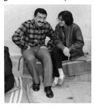
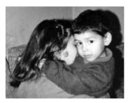

“Tam Hayatını Yoluna Koyuyor Diyorduk ki Bu Kez de Ölüm Ayırmış Oldu Bizi.”
Şükran Asuman Turan38
12 Eylül döneminde Artvin’de birçok ailede olduğu gibi benim ailemden de gözaltına alınanlar oldu. Ağabeyim Bekir Sami Asuman 12 Eylül Darbesi’nden sonra uzun süre kaçak olarak yaşadı, 1984’te tutuklandı. Tutukluluğundan 1991 yılına kadar 7 yıl değişik cezaevlerinde yattı. Ağabeyimin tutuklanmasıyla ben ve Ankara’da öğretmenlik yapan ablam gözaltına alındık. Ablam ve eniştem Ankara’da öğretmenlik yapıyorlardı. Eniştem de 1983’te gözaltına alınmış, Ankara Emniyeti’nde kaldığı süre boyunca gördüğü yoğun işkence nedeniyle ciddi rahatsızlıklarla mücadele ediyordu. Emniyet’ten askerliğini yapsın diye serbest bırakılmıştı.
Bu süreçte sürekli baskı gören ablam ve eniştem değişik arayışlara girerek 1985’te yurtdışına çıktılar ve Almanya’ya yerleştiler. Eniştem ancak 22 yıl sonra, hakkındaki dava zaman aşımına uğrayınca ülkesine gelebildi. Ablam ise 10 yıl sonra yani 1995 yılında gelebilmişti.
Artvin’de Hayat...
Biz 6 kardeşiz. Babamı 1979’da, orta üçüncü sınıfa geçtiğim yıl kaybettik. Babamdan sonra ben ve diğer 3 kardeşim annemle birlikteydik. Ağabeyim Bekir o yıllarda da kaçak olarak yaşamını sürdürüyordu. Zaten ablam kısa bir süre sonra öğretmen oldu, Ankara’ya gitti. Hem üniversite okuyordu hem de öğretmenlik yapıyordu. Benden büyük bir ağabeyim daha var ama O, siyasetle pek ilgilenmezdi. O yıllarda ağabeyimle birlikte okula gidip gelirdik. Diğer iki kardeşimin de biri 9, öbürü 14 yaşındaydı. Ekonomik anlamda çok sıkıntımız yoktu. Babam vefat ettikten sonra onun emekli maaşı da bize bağlanmıştı. Ablam kısa bir süre içerisinde çalışmaya başlayınca çok zorlanmadık. Ekonomik darboğaza girdiğimiz zaman da bir şekilde ayakta durmayı başardık. Babam memur emeklisiydi ama geçmişte yapmış olduğu birikimlerle Artvin’de bizlere yetecek kadar bir konut ve küçük bir arazi alabilmiş. Annem ev hanımıydı. Evimiz, bahçemiz, bağımız vardı. Babam hayatta olduğu dönemlerde yaşamımız biraz daha kolay ve hoştu aslında. Siyaseten hep CHP’liydiler, Atatürkçüydüler. Onun için de pek bir problem yaşanmadı. Bekir ağabeyimin lisede okuduğu kitapları bizim de okumamız ondan etkilenmemiz ve sempati duymamıza neden oldu. Sonra üniversiteye gitmesi, üniversiteden gelmesi, onun bakış açısı, yaklaşımı, duruşu bizleri daha derinden etkiledi.
Annem kırklı yaşlarındaydı. Cesur bir kadındı. Ağabeyimin kaçaklığı süresince sokakta bir olay olsa, biz de öğrenci olduğumuz için hemen bizim ev polisler tarafından basılır, arama yapılırdı. Annem bu baskınlar sırasında her zaman bir direnç gösterirdi, baskılara göğüs gererdi. Benden iki yaş büyük ağabeyim gözaltına alındığında Emniyet’e gitmiş ve polislerin elinden ağabeyimi alıp geri getirmişti. Okuması yazması yoktu ama cesareti ve girişkenliği ile işlerini halletmeye çalışıyor, bizlere sahip çıkıyor ve koşturuyordu.
Artvin’de okul ortamımız çok keyifli ve güzeldi. Öğretmenlerimizin büyük birçoğunluğuna hayranlık duyuyorduk. Bizi kitap okumaya, araştırmacı ve sorgulayıcı olmamıza alıştıran öğretmenlerimizdi. Her zaman söylerim; en çok kitabı okuduğum süreç ortaokul ve lise yıllarımdır. Ondan sonra okuduğum kitapların sayısı da süreç içerisinde azalmaya başladı. 12 Eylül 1980 sonrası başka bir tür okumalarımız başladı. Yakınlarımızın veya kendimizin iddianamelerini okurken kitapları daha az okur olduk. Genel olarak ailemiz de okuyan bir aileydi.
Ağabeyim Bekir, Karadeniz Teknik Üniveristesi’nde Fizik Mühendisliği Bölümü’nde okuyordu. Artvin’e gidip geldiğinde, onun okuduğu kitaplara, onun sohbetlerine hayran oluyorduk, o bizim gözümüzde bir dâhi gibiydi. Zaten çok başarılı bir öğrenciydi, soru sorduğumda kitaptan satır satır söyleyişlerine hep hayran kalıyordum. Liseyi Artvin’de okumuştu. Siyasette bu yıllarda çok aktif değildi ancak okuyan, sorgulayan biriydi. Üniversiteye gittikten sonra siyasette daha aktif oldu. Örgütlü mücadelede olduğu dönemde Trabzon’daydı. Kendi çalışmaları ile ilgili şeyler anlatmıyordu ama bizim daha iyi noktalara gelmemiz için daha iyi çalışmalar yapmamız gerektiğini söylüyordu. Örneğin, ben bazen mahalledeki komşulara dergiler, gazeteler okurdum. Onlara devrimcilerin ne kadar insan sever olduklarını anlatırdım, o çocuk halimle. Ama onun öyle bir çalışması olmadı mahallede. Ağabeyim siyaseti daha çok yaşadığı Trabzon’da yapıyordu. Ağabeyimle aramızda böyle bir bağımız vardı.
Üniversitede okurken Trabzon Genç-Der yönetimindeydi. O dönemde MHP’liler üniversitenin otobüsüne silahlı saldırıda bulunmuşlar ve ağabeyimin bacağına da iki kurşun isabet etmişti. Yaralandığı dönemdeki tedavi sürecinde Artvin’e gelmişti. Mahallemizde sağ görüşlü bir aile de yaşamaktaydı. Ağabeyimin Artvin’e gelişinde bu aile ile siyasi nedenlerle bir gerilim yaşandı. Bu gerilimin nedeni kanımca ağabeyimin okuluyla ilgiliydi ve onun için geri gelmişti. En azından ben öyle düşündüm yıllar sonra. Mahallemizdeki bu olaydan sonra Artvin’de de aranır oldu ve kaçmak zorunda kaldı. Bu süreçte bir dönem dağlarda gezmiş olduğunu öğrendim sonradan. İddianameyi okuyunca ve cezaevi ziyaretlerinde ne yaptın, ne ettin, nereye nasıl gittin diye sorunca öğrenebildik yaşananları. Bu süreçte Sivas, Malatya, Ordu, Fatsa bölgelerinde dolaşmış. Kaçak olduğu dönemlerde görüşsek bile ele güne karşı görüşmedik, diyorduk. Evde sakladığımızda da yok diyorduk. Bu süreçler bizim için çok gergin ve sıkıntılı günler oldu tabii ki. Özellikle onu evde sakladığımız günlerde. Evimiz iki katlıydı ancak üst katı boşalttık ve kapattık. Alta polis geliyordu, üstte ağabeyim yatıyordu. Üst kat bizim değil diyorduk, geçiştirip gidiyorduk. Benim sağlığımı etkiledi, 1979’da babamı kaybetmem, 1980 döneminde böyle sıkıntılar yaşamamız hep üst üste geldi. Tam benim üniversite sınavına hazırlandığım süreçti o dönemler. Üzüntüden hepimizde bir rahatsızlık baş gösterdi. Annemde başka türlü reaksiyon gösterdi, bende başka türlü oldu, küçük kardeşim başka türlü etkilendi ama sonuçta bir şekilde bunların üstesinden gelmeyi başarıyorsun. Her şeyi normalmiş gibi yaşıyorsun ama sonradan çıkıyor acısı, başka bir şekliyle.
Ağabeyim 1984’te tutuklandı. Bu arada ağabeyimin yakalanmasıyla bizim Ankara’daki adresimiz de ortaya çıkmış oldu.
O dönem ben, eniştem ve ablamın yanında Ankara’daydım. Üniversite yaşındaydım, sınava girdim. O zaman iki aşamalıydı sınav, ilkini kazandım. İkincisine girdim, ama bir yere giremedim. Zaten gitme şansım da yoktu çünkü 2 yaşındaki yeğenime bakıyordum ve çalışmak zorundaydım, ağabeyim içeri girmişti, ablam kaçmak zorundaydı. Bu nedenle üniversite işi sonraya ertelenmiş oldu. Sonrası mı? Sonra da tabii ki âşık oldum, evlenmek istedim. 18 yıl sonra Açıköğretim’e girdim, orada okumaya çalıştım.
19 Yaşında ve DAL’da İşkencedeydim
Ağabeyimin ve eniştemin yakalanmasıyla birlikte beni ve ablamı gözaltına aldılar. Önce ablamı götürdüler, beni yeğenimle bıraktılar. Sonra ablamı getirdiler, beni götürdüler. Hatta o esnada evimizde misafirimiz de vardı, onu da benimle Ankara DAL’a götürdüler, 19 yaşındaydım o zaman. Bu 3 günlük süreçte beni Emniyet’te bir askıya asmışlardı. Kolum, belim ve ellerim çok kötü olmuştu.
Gözlerim bağlıydı. Kollarımdan bir demire astılar, duvara dayanıyordum. Beni bütün vücudumla çekiyorlardı ve bırakıyorlardı. Duvara pat diye çarpıyordum. Parmaklarımın arasına demir miydi, kalem miydi tam emin değilim ama bir cisim koyup bütün parmaklarımı birlikte büküyorlardı. İki ay sol kolumu hiç kullanamadım. O 3 günde dudaklarımı patlatmışlardı, bütün vücudum mosmordu. Gözaltından sonra doktora gittik. Ellerimi özellikle önde tutuyorum görsün diye. Doktor gördü tabii ki; fakat rapora hiçbirini yazmadı. Yenimahalle Sağlık Ocağı’nda bir doktordu, adını hatırlamıyorum. Öyle ki, o güne dair de hiçbir şey hatırlamak istemiyorum aslında. Hücrede bir kızcağız vardı İstanbul’dan gelmişti. Öldü mü, kaldı mı sadece onu merak ediyorum ama ismini bile bilmiyorum.
Gözaltı süresince eniştem ve ağabeyim hakkında soru sordular. İkisi de alınmış ama daha fazla bilgi almaya çalışıyorlar. O 3 günün sonunda nasihat vererek ve ellerimi iyileştirmeye çalışarak beni bıraktılar. Ellerim iyileşmedi tabii ki. Ben de bundan dolayı 19 yaşında 3 gün ağır işkenceden geçmiş oldum.
Daha sonraları ben o polisleri görüyordum. Özellikle Halkevleri’nin toplantılarında veya miting olduğu zaman sivil olarak geziyorlardı. Gördüğüm zaman yüreğim ağzıma geliyordu. Eşime ben buradan gitmek istiyorum diyordum. Dar geliyordu bana, boğuluyordum. Hiçbir tepkileri yoktu. Sivil oldukları halde ben onları fark ediyordum. Gözaltında gözlerimiz bağlıydı ama bez kayınca altından görebiliyorduk. Orada halktan biriymiş gibi duruyorlardı. Korkuyordum, tedirgin oluyordum. Uzun süre de arkamda biri varmış, beni takip ediyormuş gibi yaşadım. Ancak şimdi şimdi atabiliyorum bunları. Gece 7-8’den sonra kendi başıma çok nadir dışarıda olurum, kendi sokağımda bile tedirginim. Bunu da oğluma yansıtmak istemediğim için birçok şeyi anlatmıyorum. O da çok ürkek, korkak, tedirgin olmasın diye. Tabii ki şimdiki polisleri çok fazla seçemiyorsun. Daha fazla kamufle ettiler kendilerini, küpeliler, uzun saçlılar falan. O dönem onları çok net tanıyabiliyorduk.
Ağabeyimi Arıyoruz
DAL’dan çıktıktan sonra ablam ve ben, ağabeyimi aramaya başladık. 3-4 ay hiçbir yerde bulamadık. Bekir, Fatsa Dev-Yol davasından yargılandı ama önce Malatya’da dediler, sonra Sivas’ta dediler, İstanbul’da dediler. İstanbul’u ablamla birlikte dolaştık ama diğer illerden eş dost yardımıyla haber almaya çalıştık. Dört ay sonra ağabeyimin izine Erzincan Cezaevi’nde rastladık. Sonrasında Aydın, Samsun, böyle il il dolaştırdılar.
Ağabeyimin sabit bir yeri olunca artık annemi de alıp götürmeye başladık. Erzincan’da iki tane sağ görüşlü amcam vardı. Yıllar sonra bu sebeple onların evinde konaklamak zorunda kaldık, bize tabii ki destekleri oldu. Cezaevi kapısına bırakıyorlardı, içeri girmiyorlardı. Ailede başka görüşten insanlar olunca başka türlü de yaşıyorsun bu süreci. Görüşlerimiz çatışıyor, dolayısıyla çok şey de paylaşamadığımız için oldukça sıkıntılı bir durumdu. Annemin okuma yazması olmadığı için genelde hep bizimle beraberdi, biz götürüp getiriyorduk. Ağabeyimi cezaevinde ilk görüşümüzü hatırlamıyorum. Hafızamı zorlasam da çok şey gelmiyor aklıma.
Aydın Cezaevi’ne sevk edildiğinde biz de ziyaretine gittik ama açlık grevinde olduklarından dolayı görüşe giremedik. Artık tutuklu yakınları olarak da daha örgütlü bir birlikteliğimiz vardı. Ankara’ya geri geldik, geldikten sonra aileler dedi ki, hep beraber Meclis’e gidelim, açlık grevi için kamuoyu oluşturulmasını sağlayalım, düşüncelerimizi aktaralım. Cezaevlerinde şartların iyileştirilmesi için Meclis’te milletvekilleriyle bir görüşmeye gittik, tabii milletvekillleri bizimle görüşmediler. Bu da basında tutuklu yakınları Meclis’i bastı diye çıktı. 1988’in sonuydu, aslında öyle bir Meclis basma eylemi falan da yoktu. Sadece biz tutuklu yakınları olarak içeridekilerin isteklerini iletmek, cezaevi şartlarının daha iyi olmasını talep etmek ve onların yanında olduğumuzu göstermek istemiştik. Aslında Meclis’tekiler gözaltına alınmayacaksınız diye de güvence vermişlerdi. Herkes sakince çıksın dendi. Akşam oldu tabii. Biz çıktık, yanımda da İstanbul’dan iki misafirim vardı. Onlarla kol kola Kumrular’a indiğimizde polisler tarafından gözaltına alındık. Bir de bu dönemde gözaltı yaşadım, 10 günlük bir süreçti. Evliydim, polis beni eve götürdü, evi de aradılar. Ciddi bir işkence görmedim. O süreçte Kürtlere çok ağırlık vermişlerdi. Onlara baskı

Bekir Sami ve Şükran Asuman
çoktu. Bize tek ayak üzerinde dur, konuşma, duvara dön deniliyordu. Ben 10 gün betonda, montumun üstünde yattım. Bunlar doğal olarak bende birtakım psikolojik izler bıraktığı için şimdi bir şey olur da oğlum da bunlara maruz kalır diye çok endişeleniyorum. Eşim Tugay, Artvin Dev-Yol davasından yargılanmıştı. Kendisi de çok işkence gördü ama o daha rahat oğlumuza karşı, yapmak istiyorsa yapabilir diyor. Ben daha temkinliyim.
Ağabeyim 7 yıl sonra 1991’de çıktı. O dönemde İnsan Hakları Derneği’nin cezaevinde ve Emniyet’te yaşananların fiziki ve psikolojik etkilerini araştırdıkları ve yardım sundukları bir çalışmaları vardı. Bekir ağabeyim de bu etkileri en aza indirmek ve tedavi olmak için Ankara’ya yanımıza geldi. Psikolojik olarak desteğe ihtiyacı vardı. Tabii ki bambaşka bir süreç yaşadık. Olumsuzluklar ve baskılar yaşasak da farklı ailelerle tanışıyorsun ve belki de daha önceden hiç tanımadığımız ailelerle can yoldaşı oluyorsun. 7 yıl geçmişti, teknoloji ilerlemişti. Hayat başka türlü akıyordu, ağabeyim de bu akışa uymaya çalışıyordu. Hayatın kitaplardan okuduğu gibi olmadığını görüyordu. Yaşam bir başkaydı. Karşı karşıya kalınca artık birtakım şeylerin üstesinden gelmeye başlamıştı. Kaçak olduğu süreçte üniversiteyi bitirememişti ama sonradan o da sınava girip Açıköğretim’i bitirdi. Çalışmaya başladı. Eşi de öğretmendi. Öyle geçiniyorlardı. Yaşam, büyük bir kesintiye uğradıktan sonra sıfırdan başlamıştı bir anlamda. Daha çok şey yapacaktı, hayalleri çok yüksekti. Fakat bu süreç de çok kısa oldu diyebilirim çünkü 2001 yılında Bekir’i kaybettik. Tam hayatını yola koyuyor diyorduk ki bu kez de ölüm ayırmış oldu bizi. Ölümü cezaevi süreci ve işkencelerden olabilir diye düşünmüyor değilim. Çünkü damarla ilgili sıkıntıları olmuştu. Belki o dönemde yediği dayaklardan, başka işkencelerden dolayı mıydı bilmiyorum, öyle bir teşhis yok ama bacaklarında problemi vardı. Sonrasında beyin kanaması geçirmişti, akabinde tekrar bir emboli ile iç kanama geçirdi ve ağabeyimi kaybettik. Cezaevinden çıktıktan sonraki 10 yıllık süreçte de benimle geçirdiği bir 3 yılı vardır belki. Sonrasında evlendi ve bir çocuğu oldu. Hepimizin yaşam koşullarından dolayı evlendikten sonra çok sık bir araya gelemiyorduk zaten. Öldüğünde kızı 4 yaşındaydı, ardında küçük bir çocuk ve genç bir eş kaldığı için acımız kardeş acısının ötesine geçti, tarifsiz üzüntü içerisinde kaldık. Aile olarak bir araya gelemeyecek şekilde dağılmış olduk.
Psikolojik destek almadık ama çevremdeki arkadaşlarım, dostlarım hep yanımda oldular, eşimi de o süreçte tanıdığım için bana destek oldu. Bir anlamda birbirimize yardımcı ve destek olduk. Birbirimize sarıldık ve öyle geçirdik o günleri. Darbe döneminde ve sonrasında cezaevi kapılarında daha çok zaman geçirdiğimiz için, o süreçte ailelerin yakınlaşması, dostların birlikte hareket etmesi söz konusuydu ve çok güzeldi. Ne yaşıyorsak, nasıl yaşıyorsak paylaşıyorduk.
Şu an annem hâlâ Artvin’de diğer ağabeyimle beraber. Kız kardeşim İstanbul’da, öbür kardeşim başka bir yerde, ben yine Ankara’da, hepimiz ayrı bir yerdeyiz. Sadece bir telefon trafiği var, internet çıktıktan sonra da internetten görüşmeler başladı. Onun dışında sık sık bir araya gelme olanağımız yok. Üzücü bir durum. Ablam ve eniştem hayatlarını yurtdışında devam ettirmekteler. Biz de burada kaldığımız yerden devam ediyoruz. Birkaç yıldır Türkiye’ye gidip gelebiliyorlar. Ablamın gelemediği 10 yıl içerisinde mektuplarla haberleştik. Arayabilirse telefonla görüşürdük. Onun dışında görüşmemiz hiç mümkün olmadı. Yeğenim o zaman 3 yaşındaydı. Tekrar görebildiğimde 8 yaşına gelmişti ama annesi ve babasını ancak daha sonra görebildik.
Bu dönemin ceremesini çeken daha çok ben oldum çünkü hep ağabeyimin ve ailenin geri kalanlarının peşinden koşturdum. 1985’te ablam da yurtdışına çıkınca işler bana kalmış oldu. Artvin’e döndüm. O zaman ağabeyimin mahkemesi, avukatı, protestosu, telgrafı ve diğer işleri ile birinin ilgilenmesi gerekiyordu. Ağabeyim üniversitedeyken burs alıyormuş, sonraki süreçte yakalanınca o bursları geri ödedik. Üniversitenin kütüphanesinden aldığı kitapları geri istediler, onların paralarını ödedik. Okula gitmediği halde yetim maaşı aldığı için borçlanmış, bunların da ödemesini yaptık bu arada. Kendi siyasi duruşumla ilgili değil ama ağabeyim, eniştem, ablam sebebiyle bu tecrübeleri yaşamış oldum. Şimdi ailenin derlenebilmesi için daha fazla özveride bulunmak zorunda kaldığımdan –kendi zamanım ve yaşamımdan istemeden de olsa geri durmam gerektiğinden– bazen isyan ediyorum. Artık hiçbir şeyle ilgilenmeyeceğim, diyorum. Anneme de, ablama da aynı şeyleri söylüyorum. Yoruldum tabii ki, küçük kardeşim üniversiteyi okuyacak ona destek ver, evlendikten sonra da öbürü askerde ona destek ver, Bekir cezaevinde, okulda onlara destek ver derken süreç böyle devam etti gitti. Oğlum doğduğundan beri diyorum ki her şeyi oğluma yapacağım, kimseye bir şey yapmayacağım diye düşünsem de bunu yapmak mümkün değil. Hayatı tabii ki çok dolu dolu yaşadık. Biz her bayram Erzincan’a veya Samsun’a açık görüşe giderdik. Sonra cezaevleri boşalınca biz bayramlarda bir boşluğa düştük: Ne yapıyorduk biz dedik. Bayram geliyor, evde oturuyoruz, sıkıldık gerçekten. Haa dedik, demek ki biz cezaevlerine ziyarete gittiğimiz için bayramlarımız öyle hareketli geçiyormuş. Otel bulamıyorduk kapılarda sabahlıyorduk. Çünkü açık görüşe herkes aynı zamanda gidiyor. Otellerde yer kalmıyor. Bu yükler kalkınca kendimizi yaşamaya başladık şimdi, yoksa böyle bir kavramımız yoktu. Kendini düşünerek yaşamak yeni bir şey bizim için, lüks yani.
Bu süreçle ilgili hepimiz güzel yarınlara inanmıştık, onun için de olumsuz gelmiyordu, yaptığımız hep doğru geliyordu. O dönem yaşanması gerekenler buydu, bu motivasyondu. Bunu da bir biçimde yaşadık, keşke dediğim şeyler hiçbir zaman da olmadı. Kızmadım da, bir süreçti bu yaşanılan. Sadece bizim için geçerli değildi, çevremizdeki herkes de aynı süreçten geçiyordu. Dolayısıyla çok normal geliyordu.
Komşularımızla sıkıntılarımız hiçbir zaman olmadı. Bir ailenin dışında diğerleri sosyal demokrattı mahallede. Bir de biz, başarılı, çalışkan çocuklardık, ağabeyim öyleydi çünkü. Karıncayı incitmez bu insan diye bildikleri ve kimseye kötülük yapmaz dedikleri için hiçbir zaman kimse inanmadı Bekir’in yargılanmasına. Asla böyle bir şey yapmaz, nasıl böyle bir şey olur, bu olamaz dediler. Bize karşı da aynı şekilde olumsuz bir tavır olmadı, hatta destekleri de olmuştur birçok insanın. O dönemde çokça olmasına rağmen kimse ihbar da etmedi mesela.
Unutamadıklarım...
Bekir’le ilgili radyoda yaptıkları anons hâlâ kulaklarımda çınlıyor. Aranıyorlar listesindeydi, iki adam vurmuş, bilmem ne yapmış diye anlatıyorlardı. Ağabeyim hem çok çalışkandı, takdir belgeleri alan bir öğrenciydi hem de böyle sessiz, sakin, mülayim bir insandı. Mahalleli de öyle tanıdığı için herkes çok şaşırdı. Ağabeyim köpekten korkan, karanlıktan korkan da bir insandı. Sokakta lamba yanmıyorsa tedirgin olurdu. Böyle bir insanın dağa çıkıp başka bir insan öldürmüş olma olasılığına komşular bile prim vermedi. İki kişiyi öldürdüğü gerçek olmayan bir şey. Sadece kaçak olarak dağlara gitmiş, eğitim almış, onları anlatırdı bize. O anons beni çok etkilemiştir.
Beni en derinden yaralayan anlardan bir diğeri de yeğenimden ayrılma anıydı. 3 yaşındaki yeğenimin bana Şule demesi, isimler tam konuşulmuyordu ya, teyzenin adı ne diye sorduklarında Şule teyzem diyordu, 3 yaşındaki çocuk, babasının adını Ahmet diye biliyordu, annesinin adını başka türlü biliyordu. Kimsenin gerçek ismini bilmiyordu. Ablam ve eniştem yurtdışına gitmek zorundaydı ama yeğenimden ayrılmak bana çok zor gelmişti.
Ailem uzunca bir süre bir araya gelemedi. Bir yanımız hep eksikmiş gibi hissediyorum. Ablamın yurtdışına gidişinin üzerinden 27 yıl geçmiş. Şimdi gelince sıcaklık istiyor ama olmuyor. Biz sadece düğünlerde, bir de ölümlerde bir araya gelebildik. Baba yok zaten, onun için de eksik yaşıyorsun.
Bugünden Bakınca
Şu anda bir parti üyesi değilim ama eylem veya miting olursa orada olmaya çalışıyorum. Eskiden verdiğimiz gibi bir mücadeleyi zor veririm herhalde. Ekonomik sebepleri var tabii ki. Çalışmak lazım bir yandan. Sağlık sorunlarım arttı, yaş ilerledi. Belimle ilgili sıkıntılar yaşıyorum, DAL’daki işkenceler sebebiyle midir bilmiyorum. Doktora gittiğimde bana kaza geçirdin mi diye sordu. Hayır dedim, ciddi bir kaza geçirmedim, bir düşüş yaşamadım ama belim sakat, dizim sakat.
12 Eylül Davası
Bu dava benim için hiçbir şey ifade etmiyor. Bir sürü insan öldü, bir sürü insan sakat kaldı, sağlıksız kaldı. Ruh sağlığı bozuldu. Kenan Evren’i yargılasalar ne olacak? Assak ne olacak? Benim için çok bir şey ifade etmiyor. Ölenler geri gelmeyeceği için ya da cezaevi süreçlerinde insanların giden gençlikleri geri gelmeyeceği için çok manası yok. Çok sağlıklı bulmuyorum ama bir davadır kazanılır, olabilir. Yargılamak değil de şu anda ülkenin içinde olduğu durumda bir şeyler düzelseydi, biz 1980’lerde yanlış yaptık denseydi, derdim ki yargılanmadı ama bir şeyler değişti. En azından insana saygı var ya da düşünceye saygı var diyebilseydik belki bir anlamı olurdu. Bakıyorsun insanlar hâlâ yakalanıyor, vuruluyor, öldürülüyor. Herhangi bir şeyin değişeceğini sanmıyorum, kökten bir değişim

Şükran Asuman kardeşiyle
lazım. Onu da yapamıyoruz demek ki.
Kimsenin işkence görmesini istemem, benim yaşadığım baskıyı onlar yaşasın istemem. Hayat daha güzel olsun isterim. Herkes mutlu olsun isterim. Bütün soru işaretlerime rağmen ben yine de mahkemede olurum, bu davaya desteğimi esirgemem.
38 1965 doğumlu. Muhasebeci. Ağabeyi Bekir Sami Asuman tutuklandığında Şükran 23 yaşındaydı.